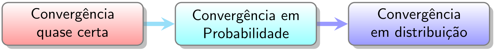

Convergência de Variáveis Aleatórias
ESTAT0075 – Probabilidade III
Prof. Dr. Sadraque E. F. Lucena
sadraquelucena@academico.ufs.br
http://sadraquelucena.github.io/Prob3
Definição 21.1: Convergência Quase Certa
Sejam \(X_1, X_2, \dots\) e \(X\) variáveis aleatórias em um espaço de probabilidade. Dizemos que \(X_n\) converge quase certamente para \(X\) se:
\[P(\lim_{n \to \infty} X_n = X) = 1\]
Notação: \(X_n \stackrel{qc}{\rightarrow} X\)
Também denominada de convergência em quase toda parte ou convergência forte.
Convergência Quase Certa
Para provarmos a convergência quase certa, frequentemente usamos o Lema de Borel-Cantelli:
- Se \(\sum_{n=1}^{\infty} P(A_n) < \infty\), então \(P(A_n \text{ infinitas vezes}) = 0\).
- Se \(\sum_{n=1}^{\infty} P(A_n) = \infty\) e os eventos \(A_n\) são independentes, então \(P(A_n \text{ infinitas vezes}) = 1\).
Exemplo 21.1
Verifique que \(X_n \stackrel{qc}{\rightarrow} 2\), com \(\{X_n : n \ge 1\}\) sendo uma sequência de variáveis aleatórias tais que, \(\forall n \ge 1\):
\[P(X_n = 1) = P(X_n = 3) = \frac{1}{n^2} \quad \text{e} \quad P(X_n = 2) = 1 - \frac{2}{n^2}.\]
Exemplo 21.2
Seja \(U_1, U_2, \dots\) uma sequência de variáveis aleatórias independentes e identicamente distribuídas (i.i.d.) com distribuição \(\text{Uniforme}(0,1)\). Defina \(Y_n = \min\{U_1, U_2, \dots, U_n\}\) como o mínimo das \(n\) primeiras observações. Verifique que: \[Y_n \xrightarrow{qc} 0\]
Dica:
- Se \(X\sim U(0,1)\): \(~F(x)=x,~ 0<x<1\).
Definição 21.2: Convergência em Probabilidade
Sejam \(X_1, X_2, \dots\) e \(X\) variáveis aleatórias. Dizemos que \(X_n\) converge em probabilidade para \(X\) se, para qualquer \(\varepsilon > 0\):
\[\lim_{n \to \infty} P(|X_n - X| > \varepsilon) = 0\]
- Notação: \(X_n \stackrel{P}{\longrightarrow} X\)
Convergência em Probabilidade
Para provarmos que uma sequência converge em probabilidade, em geral calculamos o limite direto da probabilidade ou usamos a desigualdade básica ou a desigualdade clássica de Chebyshev:
- Básica: \(P(X \ge a) \le \frac{E(X)}{a}\)
- Clássica: \(P(|X - \mu| \ge t) \le \frac{Var(X)}{t^2}\)
Intuição por trás das Convergências
Quase Certa: É uma convergência “ponto a ponto”. Se você olhar para uma única realização da sequência, ela se comporta como uma sequência numérica comum.
Em Probabilidade: É uma convergência “de massa”. A probabilidade de erro colapsa para zero, mas trajetórias individuais podem ser “rebeldes” infinitas vezes (desde que cada vez mais raramente).
Exemplo 21.3
Seja \(X_n \sim \text{Bernoulli}(p_n)\) com \(p_n = \left(\frac{1}{2}\right)^n\), \(n = 1, 2, \dots\)
Verifique que: \[X_n \stackrel{P}{\longrightarrow} 0\]
Exemplo 21.4
Seja \(\{X_n : n \ge 1\}\) uma sequência de variáveis aleatórias independentes tais que \(X_n \sim \text{Bernoulli}(1/n)\), ou seja:
\[P(X_n = 1) = \frac{1}{n} \quad \text{e} \quad P(X_n = 0) = 1 - \frac{1}{n}\]
Verifique que: \[X_n \stackrel{P}{\longrightarrow} 0\]
Definição 21.3: Convergência em Distribuição
Sejam \(X_1, X_2, \dots\) e \(X\) com funções de distribuição \(F_n\) e \(F\). Dizemos que \(X_n\) converge em distribuição para \(X\) se:
\[\lim_{n \to \infty} F_n(x) = F(x)\] Para todo ponto \(x\) onde \(F\) é contínua.
Notação: \(X_n \stackrel{D}{\longrightarrow} X\)
- Também denominada de convergência em lei ou convergência fraca.
- Usamos a função geradora de momentos (FGM) ou a função característica para prová-la.
Exemplo 21.5
Seja \(X_1, \dots, X_n\) uma sequência de variáveis aleatórias independentes com distribuição \(U(0, b)\), \(b > 0\).
Defina \(Y_n = \max(X_1, \dots, X_n)\) e \(Y = b\).
Verifique que: \[Y_n \stackrel{D}{\longrightarrow} Y\]
Dica:
- Se \(X\sim U(a,b)\): \(~F(x)=\frac{x-a}{b-a},~ a<x<b\).
Exemplo 21.6
Seja \(X_1, X_2, \dots, X_n\) uma sequência de variáveis aleatórias i.i.d. com distribuição \(\text{Uniforme}(0, 1)\). Defina \(Y_n = \max(X_1, \dots, X_n)\) e considere a sequência \(W_n = n(1 - Y_n)\). Verifique que:
\[W_n \stackrel{D}{\longrightarrow} W,\]
em que \(W \sim \text{Exponencial}(1)\).
Dica:
Se \(X\sim \text{Exp}(\lambda)\): \(~F(x)=1-e^{-x},~ x>0\).
Se \(X\sim U(0,1)\): \(~F(x)=x,~ 0<x<1\).
Teorema 21.1: Teorema da Continuidade
Sejam \(X_1, X_2, \dots\) com funções geradoras de momentos \(M_{X_1}(t), M_{X_2}(t), \ldots\), que existem para \(|t| < b\).
Se: \[\lim_{n \to \infty} M_{X_n}(t) = M_X(t)\] para \(|t| \le a < b\), em que \(M_X(t)\) é a FGM da V.A. \(X\), então:
\[X_n \stackrel{D}{\longrightarrow} X.\]
Exemplo 21.7
Seja \(X_1, \dots, X_n\) tais que \[P(X_n = k/n) = 1/n, \quad \text{para } 1 \le k \le n.\] Mostre que \(X_n \stackrel{D}{\longrightarrow} X\), com \(X \sim U(0,1)\).
Dicas:
- \(\sum_{x=1}^{n} e^{ax} = \frac{e^a [ (e^a)^n - 1 ]}{e^a - 1}\)
- \(\lim_{n \to \infty} n(e^{a/n} - 1) = a\)
Exemplo 21.8
Seja \(X_n \sim \text{Binomial}(n, p_n)\) uma sequência de variáveis aleatórias em que a probabilidade de sucesso varia com \(n\) de forma que \(p_n = \frac{\lambda}{n}\), para uma constante \(\lambda > 0\). Mostre que:
\[X_n \stackrel{D}{\longrightarrow} X,\]
em que \(X \sim \text{Poisson}(\lambda)\).
Dicas:
- Se \(X \sim \text{Poisson}(\lambda)\), então \(M_X(t) = \exp[\lambda(e^t-1)]\).
- Se \(Y \sim \text{Binomial}(n, p)\), então \(M_Y(t) = (1 - p + p e^t)^n\).
- Lembre-se: \(\lim_{n \to \infty} \left(1 + \frac{x}{n}\right)^n = e^x\).
Proposições
- P1: Se \(X_n \stackrel{qc}{\rightarrow} X\), então \(X_n \stackrel{P}{\longrightarrow} X\).
- P2: Se \(X_n \stackrel{P}{\longrightarrow} X\), então \(X_n \stackrel{D}{\longrightarrow} X\).
- P3: Se \(X_n \stackrel{D}{\longrightarrow} c\), onde \(c\) é uma constante, então \(X_n \stackrel{P}{\longrightarrow} c\).
Hierarquia:

Teorema 21.2: Teorema de Scheffé
Sejam \(X_1, X_2, \dots\) e \(X\) variáveis aleatórias contínuas, com densidades respectivas \(f_1, f_2, \dots\) e \(f\). Se \(f_n(x) \to f(x)\) quando \(n \to \infty\) para quase todo \(x\), então:
\[X_n \stackrel{D}{\longrightarrow} X\]
- Atenção! A recíproca do Teorema de Scheffé é falsa.
Teorema 21.3: Teorema de Slutsky
Se \(X_n \stackrel{D}{\longrightarrow} X\) e \(Y_n \stackrel{P}{\longrightarrow} c\) onde \(c\) é uma constante, então:
- \(X_n \pm Y_n \stackrel{D}{\longrightarrow} X \pm c\)
- \(X_n Y_n \stackrel{D}{\longrightarrow} cX\)
- \(\frac{X_n}{Y_n} \stackrel{D}{\longrightarrow} \frac{X}{c}\), se \(c \neq 0\)
Exemplo 21.9
Sejam \[ X_n \sim \text{Normal}\left(0, 1 + \frac{1}{n}\right) \quad \text{e} \quad Y_n \sim \text{Uniforme}\left(2 - \frac{1}{n}, 2 + \frac{1}{n}\right). \]
Mostre que:
\[\frac{X_n}{Y_n} \stackrel{D}{\longrightarrow} Z\]
em que \(Z \sim \text{Normal}(0; 0,25)\).
Exemplo 21.10
Seja \(X_1, X_2, \dots, X_n\) uma amostra aleatória i.i.d. de uma população com média \(\mu\) e variância \(\sigma^2\) finita. Pelo TCL, sabemos que:
\[\frac{\bar{X}_n - \mu}{\sigma / \sqrt{n}} \stackrel{D}{\longrightarrow} N(0,1)\]
Se a variância populacional \(\sigma^2\) for desconhecida e a substituirmos pelo estimador amostral consistente \(S_n^2\) (em que \(S_n \stackrel{P}{\longrightarrow} \sigma\)), utilize o Teorema de Slutsky para provar que:
\[\frac{\bar{X}_n - \mu}{S_n / \sqrt{n}} \stackrel{D}{\longrightarrow} N(0,1)\]
Fim